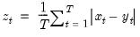

@mae Basic Statistics Mean of absolute error (difference) between series. Computes the mean of the absolute difference between x and y. Syntax: @mae(x, y, [s]) x: series y: series s: (optional) sample string or object Return: series  EViews will use the current or specified workfile sample. Examples Let yf denote in-sample forecasts for the series y. Then = @mae(yf, y) returns the MAE between the series y and its forecast. Cross-references See also @mape, @mse, @rmse, @smape, and @theil.